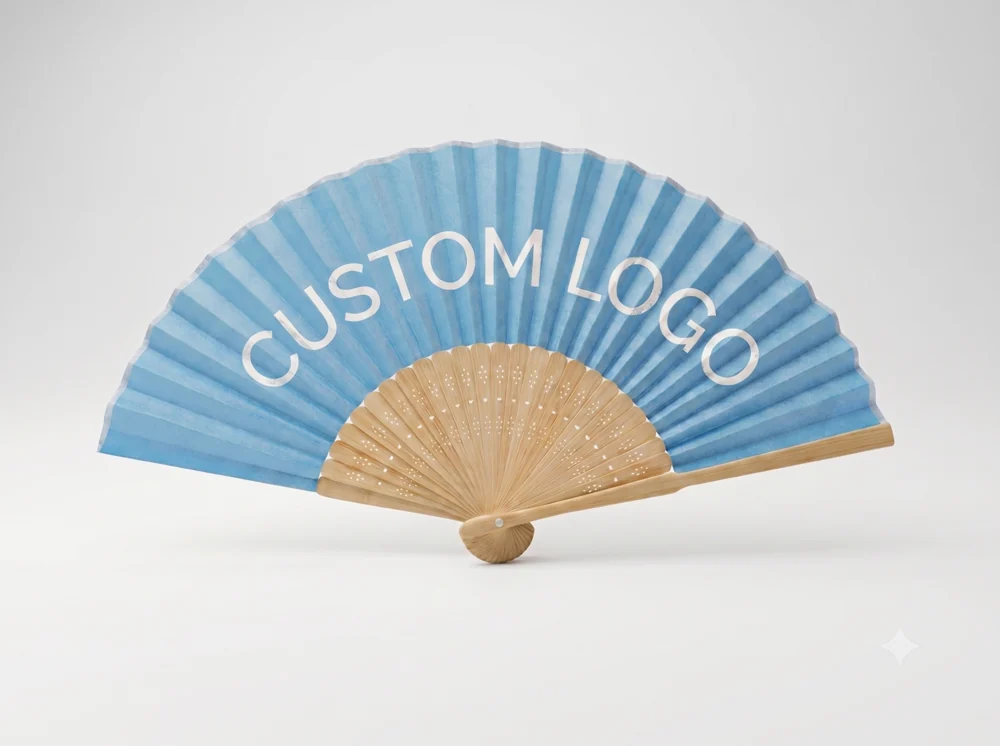
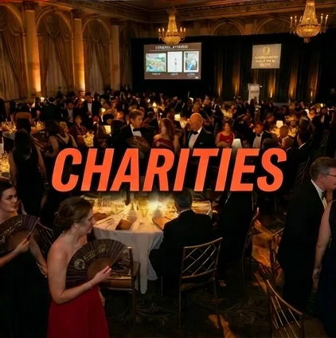
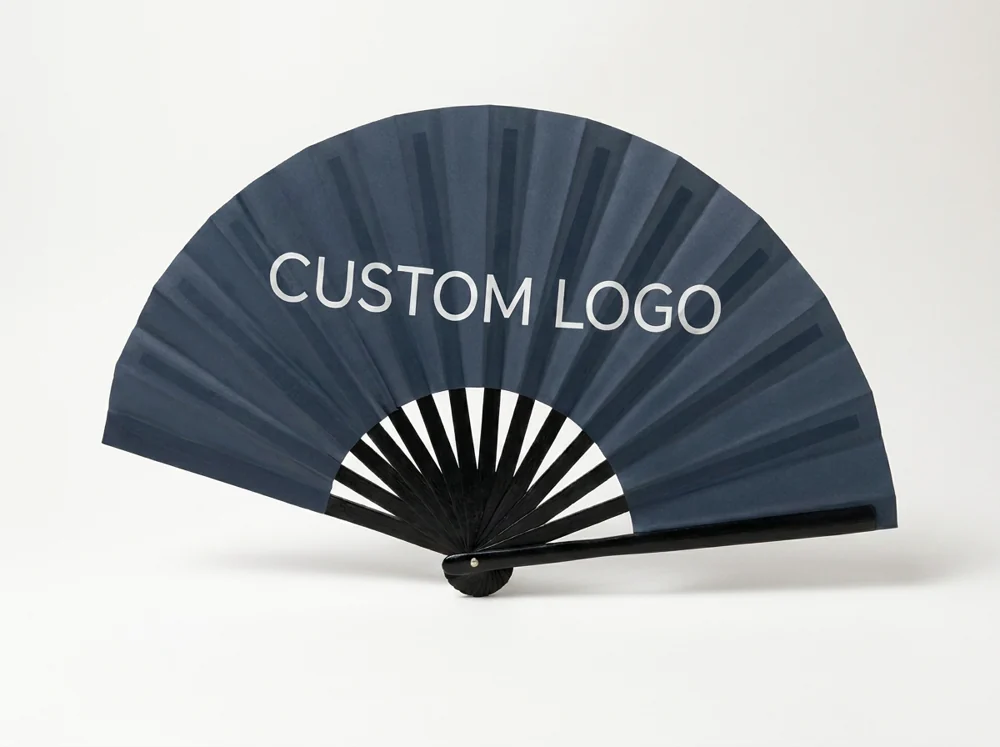
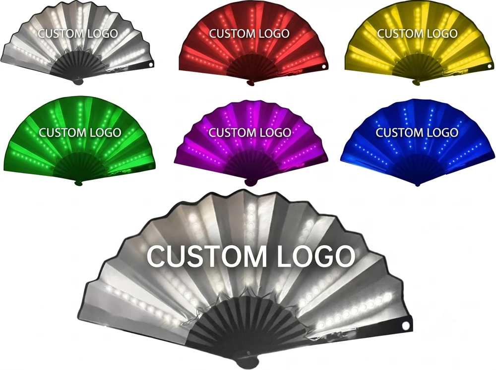
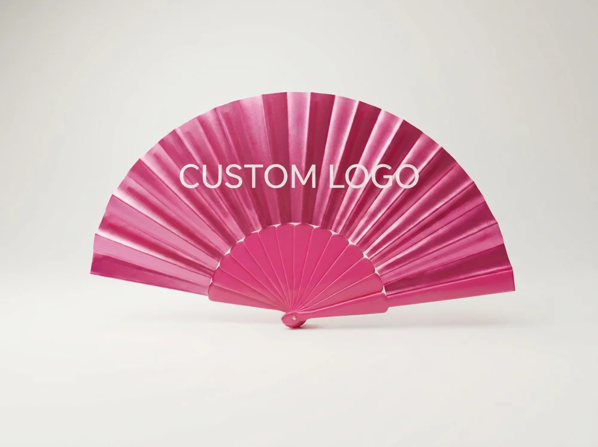
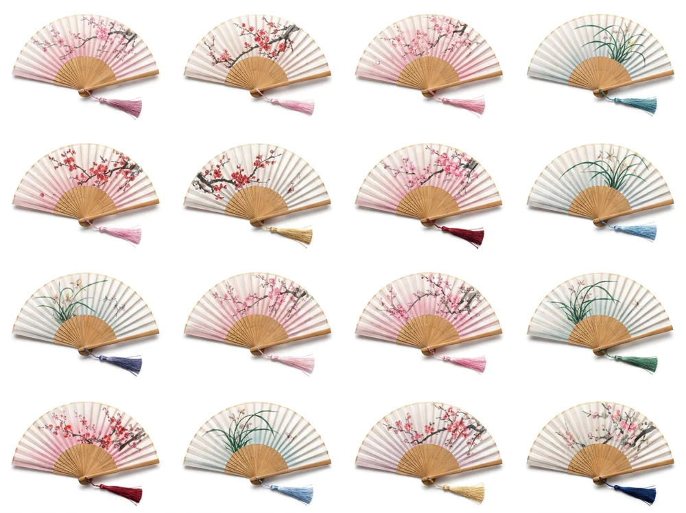
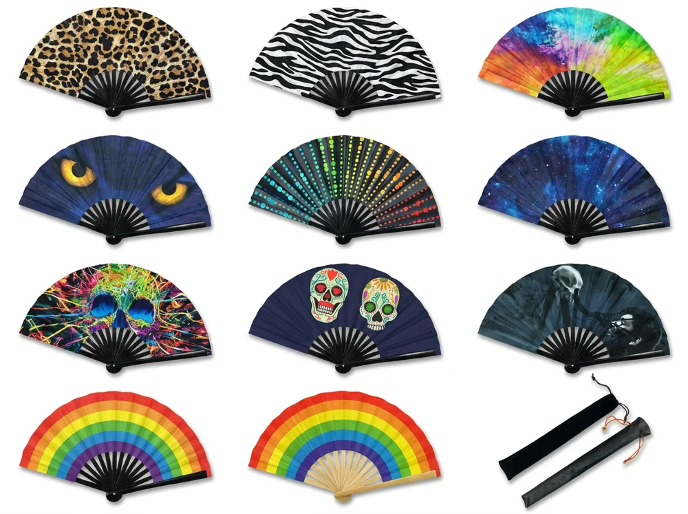
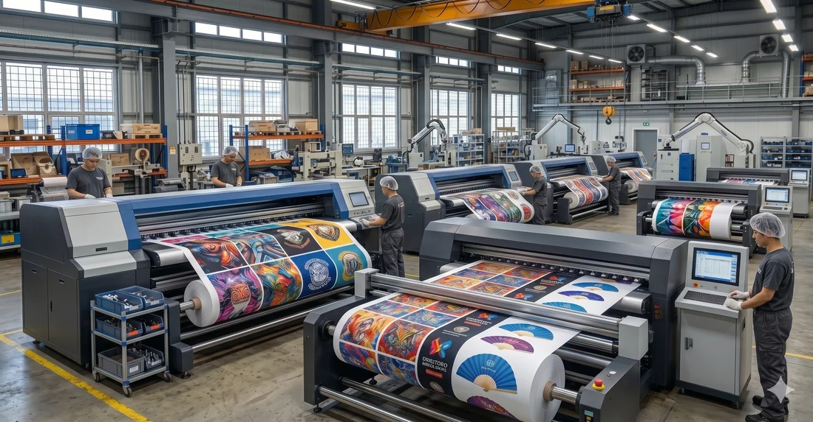
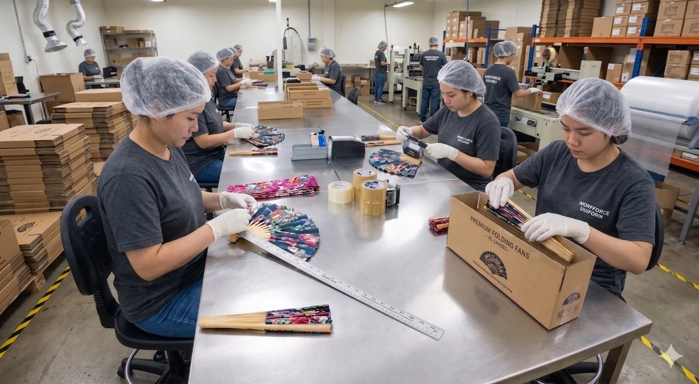

Wedding planners & celebration teams
Weddings
Coordinate the look, guest quantity and distribution date.
Plan for this occasion ↗Discuss this on WhatsApp ↗Custom folding and promotional hand fans for your brand and occasion. Explore the collection, see the making, and discuss your idea.
Discuss your idea on WhatsApp ↗
OBJECT 02 / 21cm BAMBOO FAN / CURRENT SITE IMAGETHE OCCASION
A colour that belongs to the occasion. A design that belongs to the brand. A small object guests can hold.
Then make the idea practical: confirm who receives it, how many designs you need and the date it must be ready.
Turn the idea into a format ↓Coordinate the look, guest quantity and distribution date.
Plan for this occasion ↗Discuss this on WhatsApp ↗Keep team artwork, venue rules and distribution plans together.
Plan for this occasion ↗Discuss this on WhatsApp ↗Connect brand artwork with the format, quantities and packing.
Plan for this occasion ↗Discuss this on WhatsApp ↗Plan visual presence, the intended use and relevant venue rules.
Plan for this occasion ↗Discuss this on WhatsApp ↗
Keep campaign identity, quantity and volunteer distribution clear.
Plan for this occasion ↗Discuss this on WhatsApp ↗Confirm identity permissions, artwork and the event timetable.
Plan for this occasion ↗Discuss this on WhatsApp ↗Current-site scene illustrations. These directions express possible uses, not customer case histories.
THE COLLECTION
Published format names and materials from the current collection. Compare the look, then confirm the model’s actual specification.

01
03
04
05Natural bamboo + fabric
Illustration marked as AI-generated. Confirm physical samples and available designs.
Ask on WhatsApp ↗
06GETFANIQUE / ARTWORK IN MOTION
Explore the surface, colour and folding form of a hand fan for your next brand project. Choose a format to begin the conversation, then discuss artwork, materials and what a sample would need to show.
The current site presents GetFanique as a China-based manufacturer of custom folding, clack and promotional hand fans for festivals, concerts, sports events and brand activations.
GetFanique specializes in custom folding fans, clack fans, and promotional hand fans for festivals, concerts, sports events, and brand activations. Using premium bamboo frames, durable polyester fabric, and high-quality printing, we help brands create memorable event merchandise that stands out in any crowd.
Current website introduction. Company identity, capabilities and product-specific claims remain to be confirmed.
THE MAKING
The printed surface, folding structure and final packing all shape the finished object. Bring your artwork and material questions into the conversation before choosing a format.


Figures and images come from the current GetFanique website. The facility, scope and order-specific availability need confirmation.
20,000 sqm workshop, 200+ skilled artisans, 15+ folding & clack fan production lines. From custom bamboo cutting to high-quality fabric printing and precision assembly, every step is carefully monitored. We provide photo and video updates throughout your production process — from first sample to final packaging — so you’ll never wonder what’s happening with your order.
Current site description, preserved for comparison; independent factory verification and actual update terms have not been obtained in this research.
The current product cards show 500 pcs; the FAQ says 500 pcs per design, while the hero/footer also show 100 pcs. Confirm the actual format, customisation and per-design minimum rather than treating those figures as one policy.
The current site states sample production around 7 days, mass production 15 days after sample approval, digital mockups within 24 hours and a factory response within 12 hours. These are existing claims, not verified commitments for this preview. Confirm their start conditions, working/calendar days, shipping and receiving.
Existing custom options include fabric printing, rib size/frame materials and LED modules. Current stock styles are described as available for faster branding and lower-quantity orders. Availability, scope, waterproof/environmental claims and the actual model’s requirements need confirmation.
The site describes worldwide shipping and production photo/video updates. Confirm destination, costs, usable-by date and update terms for the project.
THE NEXT CONVERSATION
Start with the occasion, the format or the question you have.
Chat directly, or prepare an optional outline below. Opening WhatsApp lets you review the message before sending.
Contact through the current website ↗Start a conversation on WhatsApp ↗